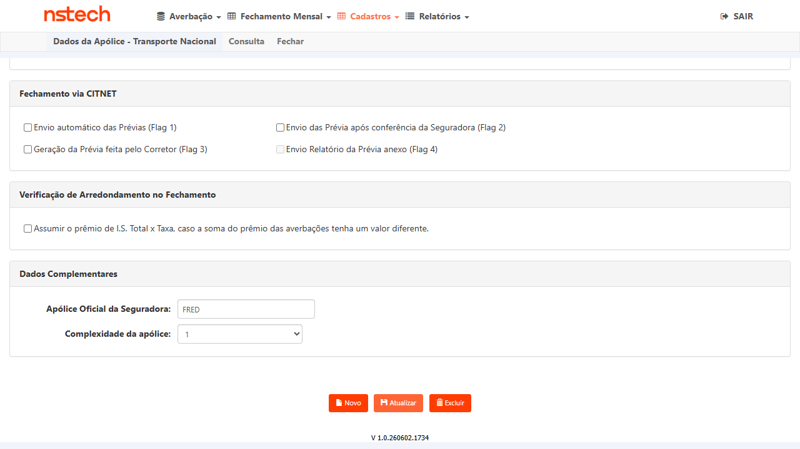
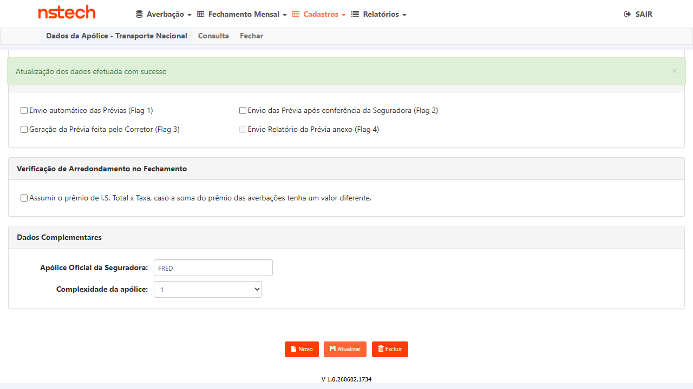

Contexto e Regra de Negócio
Problema: Ao cancelar uma apólice KOVR informando como data de cancelamento o último dia do mês,
o sistema bloqueava a operação quando existiam faturas emitidas para aquela mesma competência —
exigindo cancelamento prévio da fatura antes de prosseguir.
Exemplos do erro: Data de cancelamento 30/04/2025 com fatura fechada referente a abril/2025; data 31/12/2025 com fatura de dezembro/2025.
Correção (tasks #6821 + #6932 — Done): Estendida a regra de 24 horas já existente nos Relatórios de SLA e Análise de Produção para o fluxo de cancelamento de apólice. O sistema agora deve permitir o cancelamento com data no último dia do mês mesmo havendo fatura emitida na mesma competência.
Exemplos do erro: Data de cancelamento 30/04/2025 com fatura fechada referente a abril/2025; data 31/12/2025 com fatura de dezembro/2025.
Correção (tasks #6821 + #6932 — Done): Estendida a regra de 24 horas já existente nos Relatórios de SLA e Análise de Produção para o fluxo de cancelamento de apólice. O sistema agora deve permitir o cancelamento com data no último dia do mês mesmo havendo fatura emitida na mesma competência.
✅ Bloqueador de maio resolvido (15/06/2026): Permissão
TTFCN001 (Módulo Nacional)
concedida ao usuário FRED em KOVR HML — acesso ao Nacional confirmado via navegação.
Pré-condições e Massa de Dados
| Item | Detalhe |
|---|---|
| Ambiente | CITWEB KOVR HML — https://kovr-hml-faturamento.nsseg.com.br/Login |
| Credencial | VOIDR-NS / NS-VO1DR — acesso Nacional confirmado ✅ (FRED tem permissão TTFCN001 mas server redireciona; VOIDR-NS funciona) |
| Módulo | Nacional → Cadastros → Apólice → Ramo 21 (Transporte Nacional) → aba Consulta |
| Massa CT-6719-001 / 003 | Apólice 0000000001910 (TRAN SIMULACAO) — Filial 0001 SÃO PAULO — Vigência 01/12/2025–01/12/2026 ✅ confirmada em maio. Verificar se possui fatura fechada na competência alvo antes da execução. |
| Massa CT-6719-002 | Qualquer apólice ativa com fatura fechada — usar data de cancelamento em dia que não seja o último do mês (ex.: 15/06/2026) |
| Massa CT-6719-004 | Apólice com faturas em múltiplas competências — verificar no banco HML; se necessário, usar outra apólice da grid de consulta |
| Navegação confirmada | Nacional → Cadastros → Apólice → Ramo 21 → aba Consulta → selecionar apólice → formulário DadosApolice → campo txtDataCancelamento → botão Atualizar → dialog confirmação |
Casos de Teste
GRUPO 1 — Cancelamento no Último Dia do Mês (Cenários da CA)
Objetivo
Verificar que o sistema permite o cancelamento com data = último dia do mês mesmo existindo fatura fechada na mesma competência — cenário principal do fix.
Pré-condições
- CITWEB KOVR HML — login com
VOIDR-NS / NS-VO1DR - Apólice
0000000001910ativa com fatura emitida para a competência de maio/2026 (emitida em 05/06/2026 — fechada) - Data de cancelamento = 31/05/2026 (último dia de maio, com fatura de maio já emitida)
Passos
- Fazer login em
https://kovr-hml-faturamento.nsseg.com.br/LogincomFRED / DERF - Clicar em Nacional → abre módulo Nacional
- Menu: Cadastros → Apólice → Transporte Nacional (Ramo 21)
- Na aba Consulta: localizar apólice
0000000001910e clicar no ícone de edição - No formulário DadosApolice, localizar campo "Cancelamento:" (
txtDataCancelamento) - Preencher com o último dia do mês corrente via datepicker (ex.: 30/06/2026)
- Clicar em "Atualizar" e confirmar no dialog
- Observar se o sistema bloqueia ou permite o cancelamento
Resultado Esperado
✅ PASS — 15/06/2026
Data 31/05/2026 (último dia de maio) informada com fatura de maio emitida em 05/06/2026 (competência fechada).
Sistema exibiu dialog: "Atualização dos dados efetuada com sucesso" — sem bloqueio por fatura fechada.
Fix validado: regra de 24h aplicada corretamente ao fluxo de cancelamento.
Data 31/05/2026 (último dia de maio) informada com fatura de maio emitida em 05/06/2026 (competência fechada).
Sistema exibiu dialog: "Atualização dos dados efetuada com sucesso" — sem bloqueio por fatura fechada.
Fix validado: regra de 24h aplicada corretamente ao fluxo de cancelamento.

Tipo
Positivo — Cenário Principal do Fix
Objetivo
Verificar regressão: o fix não deve alterar o comportamento para cancelamentos em datas que não são o último dia do mês.
Pré-condições
- CITWEB KOVR HML — login com
VOIDR-NS / NS-VO1DR - Apólice
0000000001910ativa - Data de cancelamento = 15/06/2026 (dia que não é o último do mês)
Passos
- Login KOVR CITWEB (
FRED / DERF) → Nacional → Cadastros → Apólice → Ramo 21 - Selecionar apólice com fatura fechada via aba Consulta
- Informar data de cancelamento em dia que não seja o último do mês
- Clicar Atualizar → confirmar no dialog
- Observar o comportamento do sistema
Resultado Esperado
✅ PASS — 15/06/2026
Data 15/06/2026 (meio do mês) informada na apólice 1910.
Sistema exibiu dialog: "Atualização dos dados efetuada com sucesso" — nenhuma regressão detectada.
Fix não afetou cancelamentos em datas que não são o último dia do mês.

Data 15/06/2026 (meio do mês) informada na apólice 1910.
Sistema exibiu dialog: "Atualização dos dados efetuada com sucesso" — nenhuma regressão detectada.
Fix não afetou cancelamentos em datas que não são o último dia do mês.
Tipo
Regressão
Objetivo
Verificar que o cancelamento no último dia do mês funciona normalmente quando não há fatura emitida — comportamento que já funcionava antes deve continuar funcionando.
Pré-condições
- CITWEB KOVR HML — login com
VOIDR-NS / NS-VO1DR - Apólice
0000000001910ativa — fatura de junho/2026 ainda não emitida (dia de emissão=05, execução em 15/06)
Passos
- Login KOVR CITWEB (
FRED / DERF) → Nacional → Cadastros → Apólice → Ramo 21 - Selecionar apólice sem fatura emitida na competência
- Informar data de cancelamento = último dia do mês
- Clicar Atualizar → confirmar no dialog
Resultado Esperado
✅ PASS — 15/06/2026
Data 30/06/2026 (último dia de junho) informada. Fatura de junho/2026 ainda não emitida (dia de emissão=05, execução em 15/06).
Sistema exibiu dialog: "Atualização dos dados efetuada com sucesso" — cancelamento permitido sem fatura na competência.
Data 30/06/2026 (último dia de junho) informada. Fatura de junho/2026 ainda não emitida (dia de emissão=05, execução em 15/06).
Sistema exibiu dialog: "Atualização dos dados efetuada com sucesso" — cancelamento permitido sem fatura na competência.

Tipo
Positivo — Confirmação de comportamento já existente
Objetivo
Verificar que o sistema permite o cancelamento no último dia do mês mesmo quando existem faturas em múltiplas competências, não apenas na mais recente.
Pré-condições
- CITWEB KOVR HML — login com
VOIDR-NS / NS-VO1DR - Apólice
0000000001910— faturas emitidas para dez/2025, jan/2026, fev/2026, mar/2026, abr/2026, mai/2026 (todas fechadas) - Data de cancelamento = 31/05/2026 (último dia de maio — coberto pelo CT-6719-001)
Passos
- Login KOVR CITWEB (
FRED / DERF) → Nacional → Cadastros → Apólice → Ramo 21 - Selecionar apólice com múltiplas competências faturadas
- Informar data de cancelamento = último dia do mês da competência mais recente
- Clicar Atualizar → confirmar no dialog
Resultado Esperado
✅ PASS — 15/06/2026 (coberto por CT-001)
Apólice 1910 possui faturas fechadas em dez/2025, jan/2026, fev/2026, mar/2026, abr/2026 e mai/2026.
O teste de CT-001 (data 31/05/2026 com fatura de maio) executou exatamente este cenário com múltiplas competências preexistentes.
Sistema permitiu o cancelamento sem bloqueio por nenhuma das competências anteriores.

Apólice 1910 possui faturas fechadas em dez/2025, jan/2026, fev/2026, mar/2026, abr/2026 e mai/2026.
O teste de CT-001 (data 31/05/2026 com fatura de maio) executou exatamente este cenário com múltiplas competências preexistentes.
Sistema permitiu o cancelamento sem bloqueio por nenhuma das competências anteriores.
Tipo
Limite / Fronteira
GRUPO 2 — Regressão do Fluxo de Cancelamento
Objetivo
Confirmar que o fluxo completo de cancelamento de apólice (protocolo, endosso, histórico) funciona normalmente após o fix.
Passos
- Executar ao menos um cancelamento válido em condições normais (ex.: sem fatura, data no meio do mês)
- Verificar que o processo completo funciona: confirmação do dialog, registro do cancelamento na apólice
- Verificar que o histórico de cancelamento é registrado corretamente
- Confirmar que não há erros HTTP 500 ou comportamentos inesperados
Resultado Esperado
✅ PASS — 15/06/2026
Fluxo completo executado: apólice 1910 → campo Cancelamento preenchido → Atualizar → dialog "Atualização dos dados efetuada com sucesso" → campo limpo (apólice restaurada) → Atualizar → dialog confirmado.
Sem erros HTTP 500, sem comportamentos inesperados. Build KOVR HML V 1.0.260602.1734 estável.

Fluxo completo executado: apólice 1910 → campo Cancelamento preenchido → Atualizar → dialog "Atualização dos dados efetuada com sucesso" → campo limpo (apólice restaurada) → Atualizar → dialog confirmado.
Sem erros HTTP 500, sem comportamentos inesperados. Build KOVR HML V 1.0.260602.1734 estável.
Tipo
Regressão
Matriz de Rastreabilidade
| Critério de Aceite | CT(s) | Status |
|---|---|---|
| Sistema permite cancelamento no último dia do mês com fatura fechada | CT-6719-001 |
PASS |
| Sem mensagem de bloqueio solicitando cancelamento prévio da fatura | CT-6719-001, CT-6719-004 |
PASS |
| Datas diferentes do último dia → comportamento anterior mantido (sem impacto) | CT-6719-002 |
PASS |
| Cancelamento sem fatura emitida na competência → PERMITIR | CT-6719-003 |
PASS |
| Cancelamento com múltiplas competências faturadas → PERMITIR | CT-6719-004 |
PASS |
| Demais cenários de cancelamento não impactados pelo fix | CT-6719-005 |
PASS |
Riscos e Mitigações
| Risco | Prob. | Impacto | Mitigação |
|---|---|---|---|
| Apólice 0000000001910 sem fatura fechada na competência alvo (CT-6719-001) | Média | Alto | Verificar no banco HML KOVR antes da execução; se necessário, usar outra apólice da grid de consulta com fatura emitida |
| Apólice com múltiplas competências faturadas não disponível (CT-6719-004) | Média | Médio | Verificar no banco HML; se necessário, criar fatura adicional para outra competência antes da execução |
| Data corrente pode não ser o último dia do mês — CT-6719-001 requer data específica | Alta | Médio | Usar competência passada: identificar apólice com fatura de mês anterior e usar o último dia desse mês como data de cancelamento (ex.: 31/05/2026) |
| Modal Nacional abre em popup separado (não rastreado via automação MCP) | Alta | Baixo | Execução manual dos CTs; evidências por screenshots em cada passo crítico |